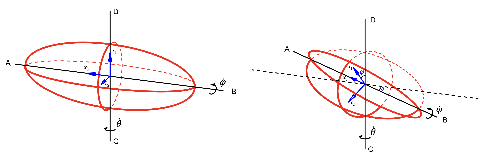
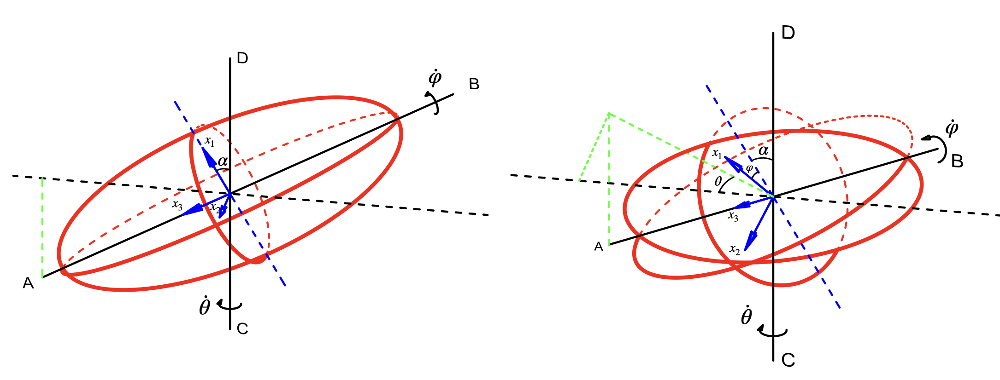

Problem.
The following problem has been taken from Landau and Lifshitz's Mechanics, 3rd edition, and was given as a problem set question in PHY354. The solution can be extremely shorttened through a simple application
of Euler's Angles, however the more interest task is completing the problem without the use of such methods. The question is stated, verbatim, as follows:
a) Find the kinetic energy of a homogenous ellipsoid which rotates about one of it's axes while that axis itself rotates about a line $CD$ perpendicular to it and passing through the centre of the ellipsoid.
b) The same as part a), but for the case where the axis $AB$ is notm perpendicular to $CD$ and is an axis of symmetry of the ellipsoid.
All of the diagrams in this solution have been constructed using AutoCAD.
Part a)
The ellipsoid orbits around the line AB with angular frequency $\dot{\varphi}$, while the line AB orbits about the line CD with angular frequency $\dot{\theta}$. This is shown in Figure 1. Initially, the principal axes $x_1, x_2, x_3$ are oriented as shown in the left hand side of Figure 1. The right side of Figure 1 shows the orientation of the ellipse at some time later. The rotational kinetic energy of the system is given by;
\[T_{rot} = \frac{1}{2}\sum_{i, j}\Omega_iI_{ij}\Omega_j = \frac{1}{2}(\Omega_1^2I_1 + \Omega_2^2I_2 + \Omega_3^3I_3) \tag{1}\]
when we are in the principal axis basis, where $I_j$ are the principal moments of inertia about $\Omega_j$ are the angular frequency of the system about each principal axis. Note that since the principal axis $x_3$ is oriented along $AB$ initially, it will always lie along this axis of rotation. Hence the component angular frequency $\Omega_3$ is simply given by $\Omega_3 = \dot{\varphi}$. To find the $\Omega_1, \Omega_2$ components, we must project the principal axes $x_1, x_2$ onto the axis of rotation CD, and then multiply by the rotational frequency of the system about that axis (namely, $\dot{\theta}$). This provides,
\begin{align*}
\Omega_1 = \dot{\theta}\cos\varphi && \Omega_2 = \dot{\theta}\cos(\pi/2 - \varphi) = \dot{\theta}\sin\varphi
\end{align*}
Plugging this into Eq.(1), we obtain
\[T_{rot} = \frac{\dot{\theta}^2}{2}(I_1\cos^2\varphi + I_2\sin^2\varphi + I_3)\]

Part b)
Similar to part a), the rotational kinetic energy of the system is given by
\[T_{rot} = \frac{1}{2}(\Omega_1^2I_1 + \Omega_2^2I_2 + \Omega_3^3I_3)\]
Since the axis AB is an axis of symmetry, the semi-major axes of the ellipsoid along $x_1$ and $x_2$ must be equal in magnitude, hence implying that $I_1 = I_2$. Thus,
\[T_{rot} = \frac{I_1}{2}(\Omega_1^2 + \Omega_2^2) + \frac{1}{2}\Omega_3^3I_3 \tag{2}\]
The system is depicted in Figure 2, where $\alpha$ is the angle at which the ellipsoid is rotated. It is useful to visualize special cases; consider the case where $\dot{\varphi} = 0$. Then to obtain $\Omega_1, \Omega_2$, we simply project the principal axes $x_1, x_2$ onto the axis of rotation CD, and multiply by the angular frequency, $\dot{\theta}$, about that axis. Namely, we would have $\Omega_1 = \dot{\theta}\cos\alpha$ and $\Omega_2 = \dot{\theta}\sin\alpha$, just as in part \textbf{3.9}. Now allowing the system to rotate about about $AB$ ($\dot{\varphi} \neq 0$), we simply project the principal axis onto the axis of rotation CD, and multiply by the angular frequency about that axis. Namely;
\begin{align*}
\Omega_1 = \dot{\theta}\cos\alpha\cos\varphi && \Omega_2 = \dot{\theta}\cos\alpha\sin\varphi
\end{align*}
This is extremely similar to part a), except we must add additional projection to account for the rotation of magnitude $\alpha$. To compute $\Omega_3$, we once again imagine the case where $\varphi = 0$. Then the principal axis $x_3$ rotates about CD with angular frequency $\dot{\theta}$, while $x_3$ makes an angle $\alpha$ with the line normal to CD. The magnitude of the component of the unit principal axis $x_3$ which is parallel to the axis of rotation $CD$ is then simply $\sin\alpha$. To obtain $\Omega_3$ in this case we simply multiply this value by the angular frequency of the body about the axis of rotation CD: $\Omega_3 = \dot{\theta}\sin\alpha$. Now consider separately the case where $\dot{\theta} = 0$ but $\dot{\varphi} \neq 0$. Then $\Omega_3$ is as given as in \textbf{3.9}; the rotational velocity of the body about the principal axis $x_3$ is simply $\Omega_3 = \dot{\varphi}$. Now allowing both $\dot{\theta}, \dot{\varphi}$ to be non-zero, we simply superpose both of the previous discussions:
\[\Omega_3 =\dot{\varphi} + \dot{\theta}\sin\alpha\]
Plugging all of these values into Eq.(2), we obtain
\[T_{rot} = \frac{I_1\dot{\theta}^2\cos^2\alpha}{2} + \frac{I_3}{2}(\dot{\varphi} + \dot{\theta}\sin\alpha)^2\]
